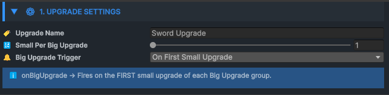
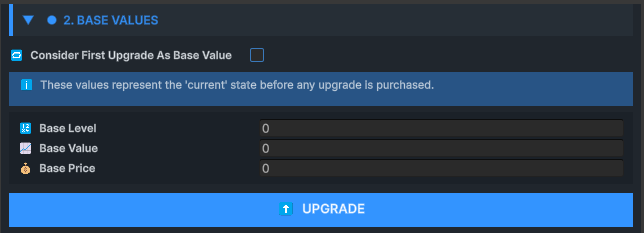
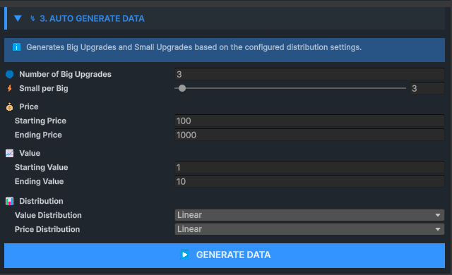
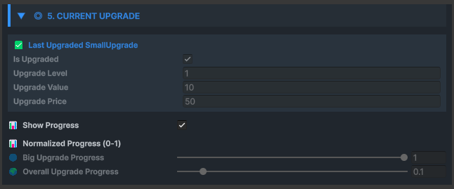
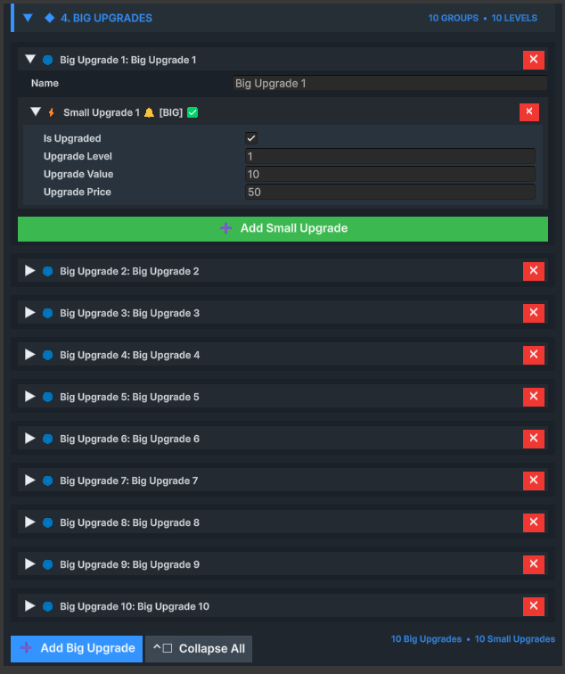
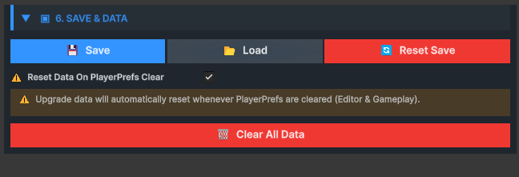

Upgrade ScriptableObject
The Upgrade ScriptableObject is the foundation of UPFS. It defines progression structure, levels, values, prices, milestones, distributions and runtime state in one reusable data asset.

The progression model
UPFS organizes progression into Big Upgrade groups containing sequential Small Upgrades.
A Small Upgrade represents one purchasable or unlockable progression step. It stores a level, gameplay value, price and completion state.
A Big Upgrade groups related Small Upgrades into a milestone. Groups make long progressions easier to author, display and react to without changing the sequential runtime model.
| Element | Purpose | Example |
|---|---|---|
| Upgrade SO | Owns the complete progression | Weapon Power |
| Big Upgrade | Groups a progression milestone | Steel Tier |
| Small Upgrade | Represents one sequential step | Level 4 → Level 5 |
Create an Upgrade asset
Create the main progression asset directly from Unity's Project window.
-
01
Open the Create menu
Right-click inside the Project window.
-
02
Choose the UPFS asset
Select Bcyly Labs › Ultimate Progression Framework › Upgrade.
-
03
Name the asset
Use a stable, descriptive name such as WeaponPower_Upgrade.
-
04
Configure the structure
Open Upgrade Settings, then use Auto Generate Data or build the list manually.
1. Upgrade Settings
Defines the identity, group structure and Big Upgrade milestone trigger behavior.
Upgrade Name identifies the progression at runtime and is currently used as part of its PlayerPrefs save key. Small Upgrades Per Big Upgrade establishes the default group size used by the data generator.
Big Upgrade Trigger Mode determines whether a Big Upgrade event is raised when a group begins or when its final Small Upgrade is completed.

| Control | Purpose | Guidance |
|---|---|---|
| Upgrade Name | Human-readable progression identity and save-key input | Keep it unique and avoid renaming after release |
| Small Upgrades Per Big Upgrade | Default number of steps in each generated group | Choose a size that matches the intended milestone rhythm |
| On First Small Upgrade | Raises the Big Upgrade event when a group starts | Useful for entering a new tier |
| On Last Small Upgrade | Raises the Big Upgrade event when a group completes | Useful for milestone rewards |
2. Base Values
Defines the state returned before the first standard upgrade has been completed.
Base Values provide the starting level, gameplay value and price when the progression has no purchased Small Upgrade. This makes the current-state API useful from the first frame.
When Consider First Upgrade As Base Value is enabled, the first Small Upgrade is silently marked as the base state. Gameplay events are not fired for this automatic initialization.

Separate base values
Use the dedicated Base Values fields when level zero or an unpurchased state exists outside the generated upgrade list.
First upgrade as base
Use the first generated entry as the initial state when every meaningful state should live inside one continuous list.
3. Auto Generate Data
Builds a complete progression from structure, value, price and distribution settings.
The generator is the fastest way to author consistent upgrade data. Define the number of groups and steps, then choose start/end ranges for gameplay values and prices.
Value and price distributions are independent. A progression can use smooth value growth with aggressive exponential cost scaling, or any other supported pairing.

| Distribution | Behavior | Typical use |
|---|---|---|
| Linear | Even change from start to end | Predictable level progression |
| Exponential / Ease In | Slower early, faster late growth | Long-term price scaling |
| Logarithmic / Ease Out | Fast early gains that gradually flatten | Early player acceleration |
| Ease In Out | Smooth S-curve | Balanced middle-focused progression |
| Random | Value selected from configured bounds | Authored variation |
| Step | Keeps the starting value | Flat values with separate cost growth |
| Custom Curve | Evaluates an AnimationCurve | Fully authored progression shape |
4. Current Upgrade
Displays and tests the live progression state without searching through nested data.
Current Upgrade provides an immediate view of the active level, value and progression status. It is useful while balancing data and while testing persistence in Play Mode.
The runtime API exposes the same state through GetCurrentUpgrade, GetNextUpgrade, GetOverallUpgradeProgress and GetCurrentBigUpgradeProgress.

- Current Small Upgrade level and gameplay value
- Next available upgrade and cost
- Progress inside the active Big Upgrade group
- Overall progress across the complete asset
- Fully upgraded state
5. Big Upgrades
Provides direct control over every group and individual progression step.
Each Big Upgrade contains a name and a nested list of Small Upgrades. Each Small Upgrade stores completion state, level, value and the native upgrade price.
Use this section to review generated data, fine-tune individual entries, add special milestone values or manually construct a progression that does not follow one mathematical curve.

| Small Upgrade field | Runtime meaning |
|---|---|
| Is Upgraded | Whether this step has been completed |
| Upgrade Level | Level identifier presented to gameplay and UI |
| Upgrade Value | Gameplay value associated with this state |
| Upgrade Price | Native single-price value stored by Upgrade SO |
6. Save & Data
Controls PlayerPrefs persistence, loading, resets and development-time data actions.
Upgrade SO serializes its Big Upgrade data to JSON and stores it in PlayerPrefs. PerformUpgrade automatically saves after a successful progression step.
Load restores the saved structure and completion state. Reset deletes the asset's save key, clears completed states and reapplies the first entry when it is configured as the base value.

| Action / Setting | Result |
|---|---|
| Save | Writes current Big Upgrade data to PlayerPrefs |
| Load | Replaces runtime data with the stored JSON data |
| Reset Save | Deletes the key and clears completion state |
| Reset on PlayerPrefs Cleared | Clears progression when no save key is found |
Runtime upgrade flow
One successful PerformUpgrade call updates state, raises events and saves the progression.
-
01
Find next step
UPFS scans Big Upgrades in order and selects the first incomplete Small Upgrade.
-
02
Complete state
The selected Small Upgrade is marked as upgraded.
-
03
Build event context
Detailed data includes Small and Big Upgrade references plus local and global indices.
-
04
Raise events
Any Upgrade and detailed events fire, followed by the configured Small or Big milestone event.
-
05
Check completion
The Fully Upgraded event fires when no next entry remains.
-
06
Persist
The updated data is saved to PlayerPrefs.
public class WeaponUpgradeController : MonoBehaviour
{
[SerializeField] private Upgrade weaponPower;
public void UpgradePower()
{
if (!weaponPower.IsFullyUpgraded())
weaponPower.PerformUpgrade();
}
}Essential Upgrade API
The most commonly used runtime calls for reading and advancing progression.
| Member | Returns | Purpose |
|---|---|---|
| PerformUpgrade() | bool | Completes the next sequential Small Upgrade |
| GetCurrentUpgrade() | SmallUpgrade | Returns the current state or base values |
| GetNextUpgrade() | SmallUpgrade | Returns the next incomplete step |
| GetSmallUpgradeByIndex(index) | SmallUpgrade | Reads an entry by zero-based global index |
| GetUpgradedSmallCount() | int | Returns the sequential completed count |
| GetOverallUpgradeProgress() | float | Returns normalized total progress |
| IsFullyUpgraded() | bool | Checks whether all entries are complete |